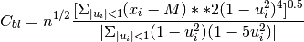
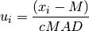

biweight_midvariance¶
- astropy.stats.funcs.biweight_midvariance(a, c=9.0, M=None)[source] [edit on github]¶
Compute the biweight midvariance for an array.
Returns the biweight midvariance for the array elements. The biweight midvariance is a robust statistic for determining the midvariance (i.e. the standard deviation) of a distribution.
The biweight location is given by the following equation

where
 is given by
is given by
where MAD is the median absolute deviation. For the midvariance parameter, c is typically uses a value of 9.0.
For more details, see Beers, Flynn, and Gebhardt, 1990, AJ, 100, 32B
Parameters: a : array_like
Input array or object that can be converted to an array.
c : float
Tuning constant for the biweight estimator. Default value is 9.0.
M : float, optional
Initial gues for the biweight location.
Returns: biweight_midvariance: float :
Returns the biweight midvariance for the array elements.
See also
Examples
This will generate random variates from a Gaussian distribution and return the median absolute deviation for that distribution:
>>> from astropy.stats.funcs import biweight_midvariance >>> from numpy.random import randn >>> randvar = randn(10000) >>> scl = biweight_midvariance(randvar)